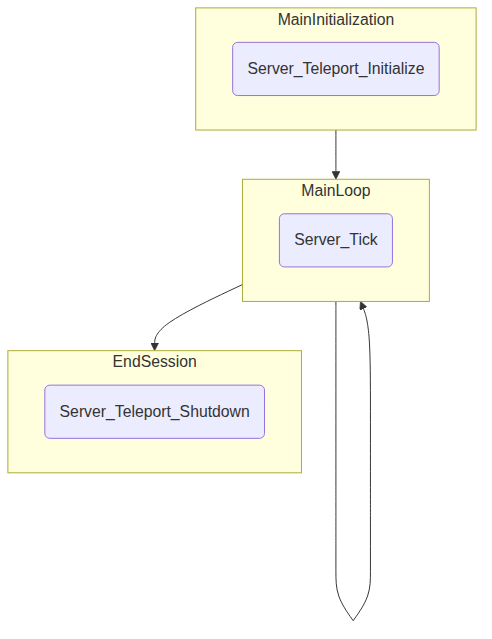

5.1. Server¶
5.1.1. Introduction¶
TeleportServer is a library that provides server functionality in conjunction with a real-time game or simulation engine. The library is usually dynamically-linked, and can be controlled from engine-side entirely by means of the functions that the dll exports. Therefore there is no need to include C++ headers from the server library engine-side, and indeed the engine need not be in C++.
5.1.2. API¶
The server library’s exported functions are described below. These global functions are declared as exports.
5.1.2.1. Structure¶
5.1.2.2. Preparation¶
In order to start a server session, it’s necessary to prepare the data - objects and resources - so it is ready to be streamed to connecting clients. On the engine side there will often be a user interface for this - see for example
-
void Server_StoreSkeleton(avs::uid id, InteropSkeleton skeleton)¶
Store the given skeleton in memory.
-
bool Server_StoreTransformAnimation(avs::uid animationID, const char *path, InteropTransformAnimation *animation)¶
Store the given animation in memory and on disk.
-
bool Server_StoreMesh(avs::uid id, const char *guid, const char *path, std::time_t lastModified, const InteropMesh *mesh, avs::AxesStandard extractToStandard, bool verify)¶
Store the given mesh in memory and on disk.
-
bool Server_StoreMaterial(avs::uid id, const char *guid, const char *path, std::time_t lastModified, InteropMaterial material)¶
Store the given material in memory and on disk.
-
bool Server_StoreTexture(avs::uid id, const char *relative_asset_path, std::time_t lastModified, InteropTexture texture, bool genMips, bool highQualityUASTC, bool forceOverwrite)¶
Store the given texture in memory and on disk.
-
avs::uid Server_StoreFont(const char *ttf_path, const char *relative_asset_path, std::time_t lastModified, int size)¶
Store the given font in memory and on disk.
-
avs::uid Server_StoreTextCanvas(const char *relative_asset_path, const InteropTextCanvas *interopTextCanvas)¶
Store the given text canvas in memory.
-
bool Server_GetFontAtlas(const char *ttf_path, InteropFontAtlas *interopFontAtlas)¶
Get the font atlas which has the given path.
-
void Server_StoreShadowMap(avs::uid id, const char *path, std::time_t lastModified, InteropTexture shadowMap)¶
Store a shadow map in memory.
-
bool Server_IsSkeletonStored(avs::uid id)¶
Returns true if id is the id of a skeleton stored in memory.
5.1.2.3. Lifecycle¶
The lifecycle of a server session is controlled by these functions:
-
bool Server_Teleport_Initialize(const teleport::server::InitializationSettings *initializationSettings)¶
Initialize the server for a server session.
-
struct InitializationSettings¶
The collected values required to initialize a server session; see Server_Teleport_Initialize().
Public Members
-
char *clientIP¶
IP address to match to connecting clients. May be blank.
-
char *httpMountDirectory¶
Local (server-side) directory for HTTP requests: usually the Teleport cache directory.
-
char *certDirectory¶
Local directory for HTTP certificates.
-
char *privateKeyDirectory¶
Local directory for private keys.
-
char *signalingPorts¶
Optional list of ports to listen for signaling connections and queries.
-
ClientStoppedRenderingNodeFn clientStoppedRenderingNode¶
Delegate to be called when client is no longer rendering a specified node.
-
char *clientIP¶
-
void Server_Teleport_Shutdown()¶
Shut down the server.
-
void Server_Tick(float deltaTime)¶
Perform periodic (e.g. once-per-frame) updates while playing.
-
void Server_EditorTick()¶
Perform periodic (e.g. once-per-frame) updates for Editor mode (not playing).
-
bool Server_Teleport_GetSessionState(teleport::server::SessionState &sessionState)¶
Request the dll fill in the server session state.
5.1.2.4. State Management¶
-
avs::uid Server_GetUnlinkedClientID()¶
Get an id for a client that has connected but not yet been hooked up engine-side.
-
avs::uid Server_GetOrGenerateUid(const char *path)¶
Get the unique id (avs::uid) corresponding to the given resource path. Generate a new one if no id is yet associated with this path.
-
avs::uid Server_PathToUid(const char *path)¶
Get the unique id (avs::uid) corresponding to the given resource path. Returns 0 if none is defined.
-
size_t Server_UidToPath(avs::uid u, char *const path, size_t len)¶
Get the resource path corresponding to the given unique id. Returns the length of the path string, or 0 if none is defined.
-
bool Server_EnsureResourceIsLoaded(avs::uid u)¶
If the resource is already loaded in memory, return true. If it is not, try to load it from the file cache and return true if succeeded, false otherwise.
-
avs::uid Server_EnsurePathResourceIsLoaded(const char *path)¶
If the resource is loaded in memory, return the uid for the given path. If not, try to load it, return the corresponding uid if successful or 0 if not.
-
void Server_SaveGeometryStore()¶
Save all the resources from memory to disk.
-
bool Server_CheckGeometryStoreForErrors()¶
Check all resources in memory for errors.
-
void Server_LoadGeometryStore(size_t *meshAmount, LoadedResource **meshes, size_t *textureAmount, LoadedResource **textures, size_t *materialAmount, LoadedResource **materials)¶
Load all resources that can be found in the disk cache into memory.
-
void Server_ClearGeometryStore()¶
Clear all resources from memory.
-
void Server_SetDelayTextureCompression(bool willDelay)¶
Tell the dll whether to delay texture compression (rather than compress instantly when textures are stored).
-
void Server_SetCompressionLevels(uint8_t compressionStrength, uint8_t compressionQuality)¶
Tell the dll what compression values to use for textures. Applies only to future compression events, does not recompress existing data.
-
uint64_t Server_GetNumberOfTexturesWaitingForCompression()¶
Returns how many textures are in the queue to be compressed and stored.
-
bool Server_GetMessageForNextCompressedTexture(char *str, size_t len)¶
Get a progress update message for the texture next in the compression queue.
-
void Server_CompressNextTexture()¶
Compress the next texture in the queue.
5.1.2.5. Axis Conversions¶
Various axis conventions are used in different applications, game engines and API’s. The reference API defines avs::AxesStandard to represent the possible standards that can be used.

The API provides conversion functions to transform between axis systems .. doxygenfunction:: Server_ConvertTransform
-
void Server_ConvertRotation(avs::AxesStandard fromStandard, avs::AxesStandard toStandard, vec4 &rotation)¶
Convert a quaternion rotation between two avs::AxesStandard’s.
-
void Server_ConvertPosition(avs::AxesStandard fromStandard, avs::AxesStandard toStandard, vec3 &position)¶
Convert a position between two avs::AxesStandard’s.
-
void Server_ConvertScale(avs::AxesStandard fromStandard, avs::AxesStandard toStandard, vec3 &scale)¶
Convert a scale between two avs::AxesStandard’s.
-
int8_t Server_ConvertAxis(avs::AxesStandard fromStandard, avs::AxesStandard toStandard, int8_t axis)¶
Convert the specified axis index between two avs::AxesStandard’s.
5.1.2.6. Memory¶
-
void Server_DeleteUnmanagedArray(void **unmanagedArray)¶
Delete an array that was created in the dll.
-
size_t Server_SizeOf(const char *str)¶
Returns the size of the named structure according to the dll. This should match the size of the corresponding interop structure in the engine.
5.1.2.7. Setting Properties¶
-
void Server_UpdateServerSettings(const ServerSettings newSettings)¶
Apply new server settings.
-
bool Server_SetCachePath(const char *path)¶
Set the local (server-side) path where cached streamable resources are stored.
-
void Server_SetConnectionTimeout(int32_t timeout)¶
Tell the dll how long to wait for a timeout.
5.1.2.8. Setting Delegates¶
-
void Server_SetClientStoppedRenderingNodeDelegate(ClientStoppedRenderingNodeFn clientStoppedRenderingNode)¶
Tell the dll what delegate to use when a client has stopped rendering a node.
-
void Server_SetClientStartedRenderingNodeDelegate(ClientStartedRenderingNodeFn clientStartedRenderingNode)¶
Tell the dll what delegate to use when a client has started rendering a node.
-
void Server_SetHeadPoseSetterDelegate(SetHeadPoseFn headPoseSetter)¶
Tell the dll what delegate to use when a client has updated its head pose.
-
void Server_SetNewInputStateProcessingDelegate(ProcessNewInputStateFn newInputProcessing)¶
Tell the dll what delegate to use when a client has sent the server new input state data to process.
-
void Server_SetNewInputEventsProcessingDelegate(ProcessNewInputEventsFn newInputProcessing)¶
Tell the dll what delegate to use when a client has sent the server new input events to process.
-
void Server_SetDisconnectDelegate(DisconnectFn disconnect)¶
Tell the dll what delegate to use when a client has disconnected.
-
void Server_SetProcessAudioInputDelegate(ProcessAudioInputFn f)¶
Tell the dll what delegate to use when a client has sent audio packets.
-
void Server_SetGetUnixTimestampDelegate(GetUnixTimestampFn function)¶
Tell the dll what delegate to use to obtain a current Unix timestamp.
-
void Server_SetMessageHandlerDelegate(avs::MessageHandlerFunc msgh)¶
Tell the dll what delegate to use to send log messages.
5.1.2.9. Video¶
-
bool Server_GetVideoEncodeCapabilities(avs::EncodeCapabilities &capabilities)¶
Get the video encoding capabilities of this server.
-
void Server_InitializeVideoEncoder(avs::uid clientID, VideoEncodeParams &videoEncodeParams)¶
Initialize for video encoding.
5.1.2.10. Audio¶
-
void Server_SetAudioSettings(const AudioSettings &newAudioSettings)¶
Assign new audio settings.
-
void Server_SendAudio(const uint8_t *data, size_t dataSize)¶
Send a chunk of audio data to all clients.
5.1.3. Classes¶
-
class AudioEncodePipeline¶
A wrapper for an avs::AudioEncoder and an avs::Pipeline.
-
class AudioEncoder : public avs::AudioEncoderBackendInterface¶
Implementation of the default audio encoding.
-
struct ClientNetworkContext¶
Wrapper for the network pipeline objects for a given client. //
-
class ClientData¶
Data object for a connected client.
-
class ClientManager¶
Container for the client-specific data objects.
-
class ClientMessaging : public avs::GenericTargetInterface¶
Per-client messaging handler.
Public Functions
-
int64_t GetServerTimeUs() const¶
Get current server-time in nanoseconds (i.e. time since server started).
-
int64_t GetServerTimeUs() const¶
-
class SignalingService¶
Signaling service for establishing connections with clients.
-
class GeometryEncoder : public avs::GeometryEncoderBackendInterface¶
Backend implementation of the geometry encoder.
-
class GeometryStore¶
Singleton for storing geometry data and managing the geometry file cache. The definitive geometry store is the file structure pointed to by SetCachePath(). The structure in GeometryStore is the session structure, using uid’s for quick reference.
Public Functions
-
bool CheckForErrors()¶
Check for errors - these should be resolved before using this store in a server.
-
avs::uid GetOrGenerateUid(const std::string &path)¶
Get or generate a uid. If the path already corresponds to an id, that will be returned. Otherwise a new one will be added.
-
avs::uid PathToUid(std::string p) const¶
Get the current session uid corresponding to the given resource/asset path.
-
bool CheckForErrors()¶
-
class GeometryStreamingService : public avs::GeometryRequesterBackendInterface¶
This per-client class tracks the resources and nodes that the client needs, and returns them via GeometryRequesterBackendInterface to the encoder.
Public Functions
-
virtual void encodedResource(avs::uid resourceID) override¶
Tell the StreamingService that a resource has been sent.
-
virtual void confirmResource(avs::uid resourceID) override¶
Tell the StreamingService that a resource has been received by the client.
-
void getResourcesToStream(std::set<avs::uid> &outNodeIDs, std::set<avs::uid> &genericTextureUids, std::set<avs::uid> &meshes, std::set<avs::uid> &materials, std::set<avs::uid> &textures, std::set<avs::uid> &skeletons, std::set<avs::uid> &bones, std::set<avs::uid> &animations, std::set<avs::uid> &textCanvases, std::set<avs::uid> &fontAtlases) const¶
The Geometry Streaming Service tracks.
-
virtual avs::RenderingFeatures getClientRenderingFeatures() const override¶
Returns the rendering features the client supports.
-
bool streamNode(avs::uid nodeID)¶
Returns true if the node is in the GeometryStore and thus could be added.
-
virtual void encodedResource(avs::uid resourceID) override¶
-
class HTTPService¶
Interface for http services.
Subclassed by teleport::server::DefaultHTTPService
-
class DefaultHTTPService : public teleport::server::HTTPService¶
Default service for HTTP download of resources from the Teleport server.
-
class NetworkPipeline¶
Network pipeline.
-
struct ServerSettings¶
Settings specific to the server state, shared across all clients.
-
class SourceNetworkPipeline¶
-
class VideoEncodePipeline¶
Wrapper for the video encoding pipeline objects.
5.1.4. Networking¶
Each client connection contains a pipeline that gathers data for sending to the client, and distributes incoming data from the client. This pipeline is distributed over threads, which communicate using avs::Queue pipeline nodes.